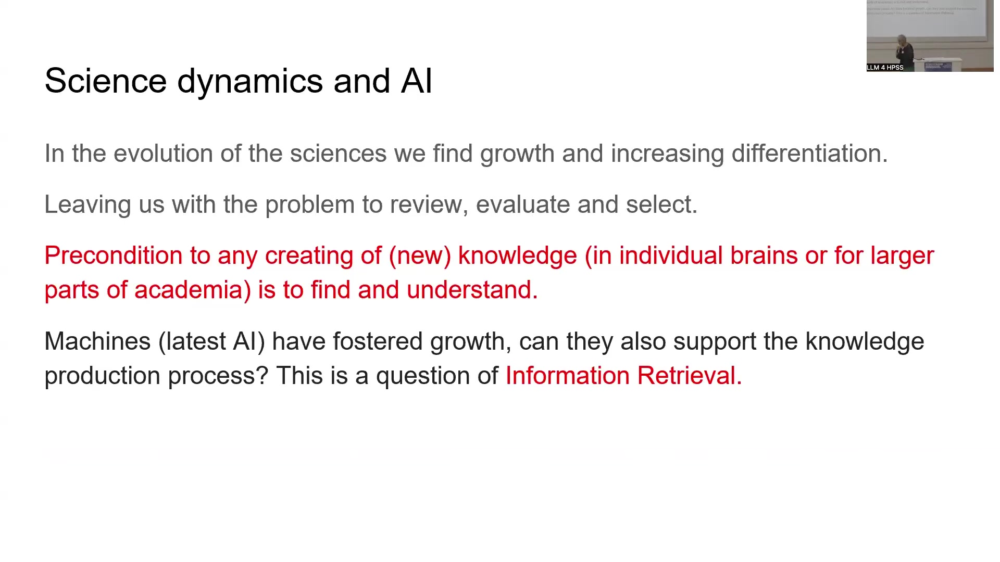
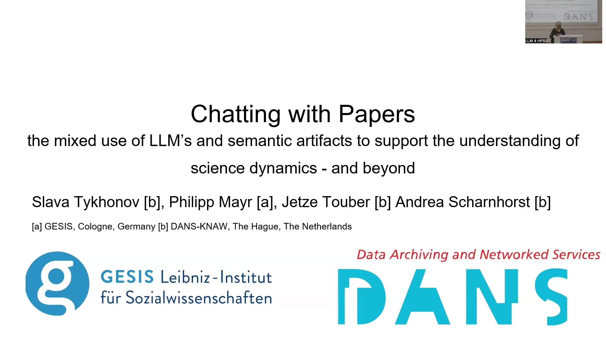
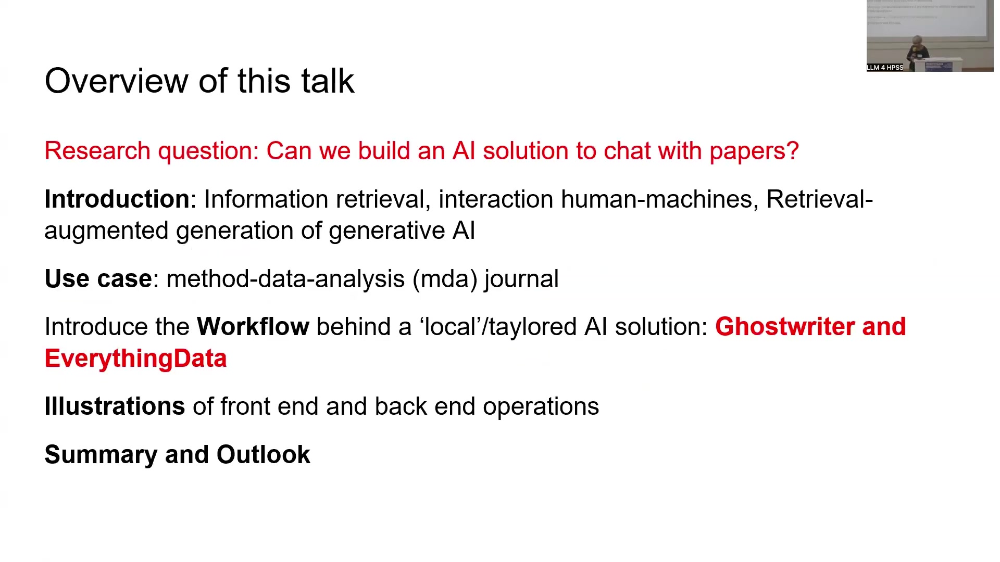
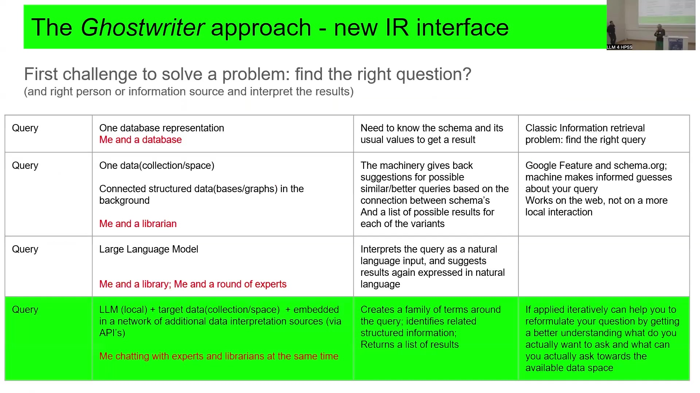
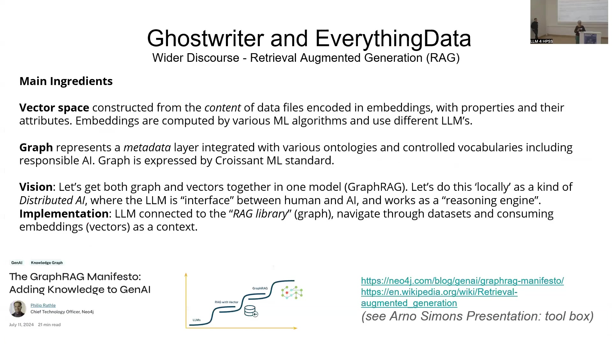
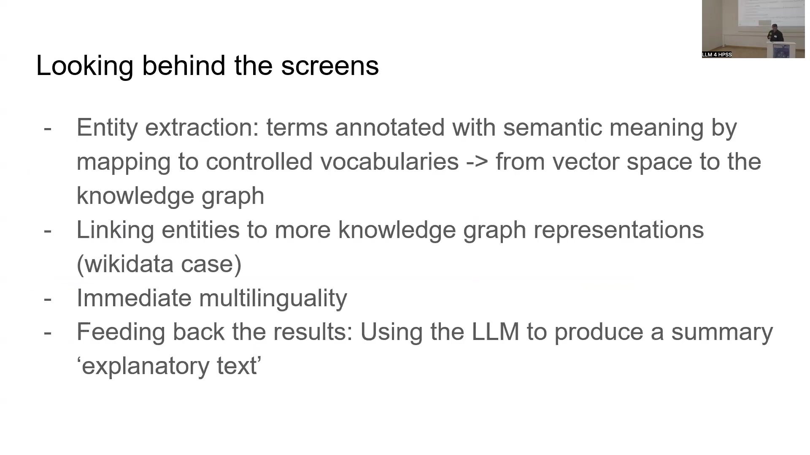
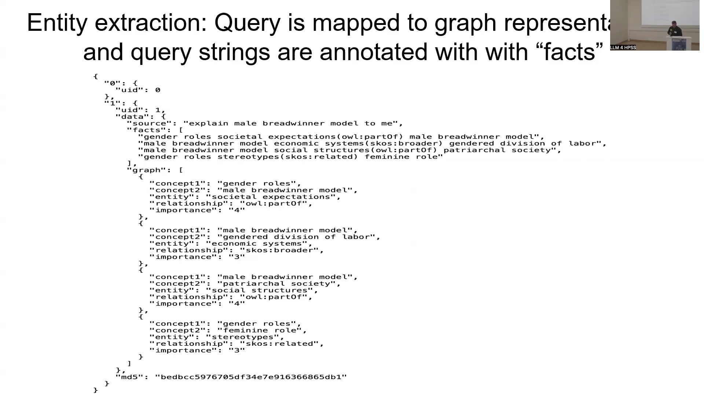

11 Can We Build an AI Solution to Chat with Papers? Exploring the Ghostwriter and EverythingData Workflow
Overview
This exploration investigates the potential of artificial intelligence (AI) to facilitate direct, conversational engagement with academic papers. Central to this inquiry is the development of a bespoke AI solution, encompassing an introduction to information retrieval, human-machine interaction, and Retrieval-Augmented Generation (RAG) techniques. A specific use case, the method-data-analysis (mda) journal, serves to illustrate the practical application. The chapter details the underlying workflow of this tailored AI solution, introducing components nicknamed ‘Ghostwriter’ (the interface) and ‘EverythingData’ (the backend processes). Furthermore, it provides illustrations of both front-end and back-end operations, culminating in a summary of findings and an outlook on future developments.

11.1 The Challenge of Information Overload in Science
The evolution of scientific disciplines reveals a consistent pattern of growth and increasing differentiation. This expansion, whilst indicative of progress, presents a significant challenge: the overwhelming task of reviewing, evaluating, and selecting relevant information from a vast corpus of literature. Effectively creating new knowledge, whether within individual minds or across broader academic communities, presupposes the ability to first find and then comprehend existing work. Machines, particularly recent AI advancements, have undeniably fostered this growth in information. A pressing question thus arises: can these same technologies also support the intricate process of knowledge production itself? This inquiry fundamentally concerns Information Retrieval.

Addressing this, a core research question guides this work: can an AI solution be constructed to enable users to ‘chat’ with papers from a specific, curated selection? The exploration centres on illustrating such a system, demonstrating how AI can help manage the flood of information in which researchers increasingly find themselves. Two key components underpin this solution: ‘Ghostwriter’, an intuitive interface, and ‘EverythingData’, a comprehensive term for the backend architecture and data processing pipelines.
11.2 Conceptualising Interaction: Librarians and Experts
To articulate the system’s interaction paradigm on a more general level, certain metaphors prove insightful. One can conceptualise the interaction as a dialogue with different personas. The ‘librarian’ metaphor represents structured data, knowledge organisation systems, and pre-existing classifications – the organised information of the past. Conversely, the ‘expert’ metaphor embodies interaction through natural language, reflecting a conversation with a knowledgeable specialist. The Ghostwriter interface aspires to facilitate a simultaneous conversation with both these ‘librarians’ and ‘experts’, merging structured data access with natural language understanding.
11.3 The Ghostwriter Approach: A Novel Information Retrieval Interface
A primary challenge in any problem-solving endeavour is formulating the right question. Traditional information retrieval often requires users to possess knowledge of database schemas and their typical values to obtain meaningful results. More advanced systems, akin to interacting with a ‘librarian’ backed by connected structured databases, might suggest similar or better queries based on schema connections, a feature common on the web but less so in localised interactions. Large Language Models (LLMs) alone, representing an interaction with a ‘library’ or a ‘round of experts’, interpret natural language queries and provide natural language results.
The Ghostwriter approach, however, proposes a more integrated model. It involves a local LLM interacting with a target data collection, embedded within a network of additional data interpretation sources accessible via APIs. This configuration allows a user to ‘chat’ with experts and librarians concurrently. The system generates a family of terms around the initial query, identifies related structured information, and returns a list of results. Crucially, if applied iteratively, this process can assist users in reformulating their questions by fostering a better understanding of what they genuinely wish to ask and what questions the available data space can meaningfully address. This methodology aligns with the broader academic discourse on Retrieval-Augmented Generation (RAG), a topic well introduced in literature such as Philip Rathle’s work for Neo4j.

11.4 Ghostwriter and EverythingData: Architecture and Workflow
The construction of this conversational AI solution relies on several main ingredients. Firstly, a vector space materialises from the content of data files, encoded in embeddings computed by machine learning algorithms and various LLMs. Secondly, a graph component provides a metadata layer, integrated with ontologies and vocabularies, often expressed using standards like the Croissant ML standard.
The vision underpinning this architecture is the combination of graph structures and vector representations into a unified model, sometimes termed GraphRAG. This model functions as a ‘locally’ distributed AI, where the LLM serves as both an interface and a reasoning engine. In its implementation, the LLM connects to a “RAG library” (the graph component) to navigate datasets and consumes embeddings (vectors) as contextual information.
The workflow commences with a collection of articles, for instance, from the method-data-analysis (mda) journal. These documents feed into the ‘EverythingData’ backend. Here, a series of operations execute: information ingests into a vector store (e.g., using Qdrant), followed by term extraction, embedding construction, and other related processes. A key insight from development conversations is that coupling this vectorised information with knowledge graphs significantly enhances its value. This linkage contextualises words, phrases, and embeddings, adding another layer of meaning. This enriched data, comprising the vector space and graph, forms the knowledge base with which the Ghostwriter interface interacts. When a user formulates a natural language question, the system consults this knowledge base, returning a list of relevant documents—as one might expect from information retrieval—along with a summary generated by the machinery reflecting its understanding of the query.

11.5 Technical Foundations: Vector and Graph Databases in RAG
The development of this system involved deconstructing the LLM training process into smaller, manageable pieces to identify optimal application points. Whilst demonstrated with academic papers, the underlying principles extend to any web content, including spreadsheets, enabling users to ask questions about specific values with responses grounded solely in the provided source, thereby mitigating hallucinations. A core objective was to employ relatively simple LLMs (e.g., one billion parameters) augmented with knowledge graphs to answer complex questions accurately.
For the use case focusing on the GESIS journal ‘methods, data, analyses’ (mda), papers were ingested into the Ghostwriter tool, creating a distinct collection. The system deliberately avoids relying on any pre-existing knowledge within the LLM. Instead, when a user asks a question about a specific paper, the system must respond using only factual information present within that paper. If the information is absent, the system explicitly states its inability to answer, fulfilling a crucial design goal.

The process involves splitting each paper into small blocks, each assigned a unique identifier. LLM techniques then intelligently connect and retrieve these blocks. Weights and other factors, informed by knowledge graphs, help predict which text segments will best answer a specific question.
11.6 Ghostwriter in Action: Indexing and Querying
To illustrate, content from the mda journal website undergoes an indexing process within the Ghostwriter interface. A test collection, for example, might comprise around 100 articles scraped from the mda website.
When a query, such as “explain male breadwinner model to me,” is posed, the system furnishes an answer along with references to the source documents. This implementation ensures that references are accurate and the system does not confabulate information, as it knows precisely where to find the relevant data. If the system cannot locate information for a query, it clearly indicates that no direct information is available. Users also possess the facility to add new papers to the collection, so that subsequent identical queries can find answers within the newly added content.
The system supports an iterative approach to questioning. For instance, a user might refine their initial query to “explain how data was collected on the male breadwinner model.” If the indexed texts lack direct information on data collection methods for this specific model, the system will state this, potentially referencing studies that examined the model but without detailing their data collection procedures. This iterative refinement helps prevent “hallucinations” by grounding responses firmly in the available textual evidence.
11.7 Behind the Scenes: Enhancing Retrieval with Semantics
Several sophisticated processes operate behind the Ghostwriter interface to enable its capabilities. Entity extraction plays a crucial role, where terms are annotated with semantic meaning by mapping them to controlled vocabularies. This effectively transitions information from a simple vector space to a richer knowledge graph representation.

Entities identified in the text are further linked to established knowledge graph representations, such as Wikidata. This linkage is fundamental to achieving immediate multilinguality. A query in one language can be understood and processed against documents in other languages because the underlying entities are mapped to language-agnostic identifiers with multilingual labels. For example, a query like “explain male breadwinner model to me” is internally deconstructed. The terms are mapped to graph representations and annotated with “facts” derived from knowledge organisation systems. This process can be repeated numerous times, uncovering deeper semantic layers beneath a term.

The system links these extracted entities to Wikidata, obtaining identifiers that connect to multilingual translations and associated properties. This means a query effectively becomes a set of Wikidata identifiers, decoupling the knowledge from the specific phrasing of the question and the language of the source papers. This structured, semantic representation of the query is then fed to the LLM, which in turn produces a summary or “explanatory text” based on the retrieved and contextualised information. The original query, once processed and enriched with semantic annotations, can be translated into hundreds of languages, all forming part of the comprehensive query submitted to the LLM.
This approach of decoupling knowledge by representing it as connections to external, stable identifiers (like those in Wikidata) offers a robust method for grounding LLM responses and for benchmarking. New LLMs can be tested against the same identifier-based queries to assess their consistency and accuracy in retrieving relevant concepts. Knowledge organisation systems, therefore, are posited as a cornerstone for future developments in reliable AI.
11.8 Live Demonstration Insights
A practical demonstration showcased the system’s capabilities. Upon querying “Rational Choice Theory,” the interface processed the request, retrieved relevant information from its indexed collection of papers, and presented a summary derived from multiple sources, complete with references to the original documents.
Further interaction involved refining the query to “explain utility in Rational Choice Theory.” The system again selected pertinent information segments from the papers and delivered a nuanced response, still pointing to the source materials. An important feature highlighted was the system’s multilingual proficiency; questions posed in English could elicit responses based on papers written entirely in German, for instance.
The system also offers an API, enabling its integration into automated, agentic architectures where queries can be chained, results collected, and analyses performed to identify new knowledge within papers. If the system lacks an answer, users can add the relevant page or document, ensuring its availability for future queries.
11.9 Summary and Outlook
The Ghostwriter and EverythingData pipeline demonstrates a functional approach for creating a semantic index and a local chatbot for diverse collections, ranging from webpages and RSS feeds to trusted data repositories like Dataverse instances. This enables localised “chatting with papers,” thereby supporting closer human reading and comprehension. By situating a user’s question (and the document collection) within a specific area of the networked space of scientific knowledge, the search space becomes more contained and relevant.
Users can gain information that extends beyond what is explicitly stated in the text or annotated in metadata. This occurs through the creation of associations at both the natural language level and the level of Knowledge Organisation Systems, akin to conversing with the “invisible colleges” of experts behind the papers. The Ghostwriter interface, built upon the EverythingData workflow, empowers users to find related documents and, critically, to refine their questions and queries iteratively.
A significant advantage of this approach is local control, offering an alternative to relying on large, external AI models where users may have less oversight and incur costs. The system is envisioned not as a replacement for human intellect but as a tool to provoke and support the human thought process, particularly in the crucial phase of formulating the right research questions.
Future work involves fostering collaborations where specific research questions can drive further development and refinement. The principles are adaptable to various data sources. Validation is an ongoing process, with plans to involve the wider community, potentially through open-sourcing the project via organisations like the Linux Foundation. This community engagement will be vital for benchmarking against other systems and continuously improving performance. The system’s architecture, which decouples knowledge representation from specific LLMs, facilitates this validation by allowing different models to be tested against a stable knowledge base. Furthermore, the ease of ingesting new collections, as demonstrated by work with institutions like Harvard University to index diverse content including GitHub repositories and manuals, underscores its flexibility. Addressing potential biases, such as recency bias in results, involves collecting facts with associated timestamps, allowing for nuanced, temporally-aware processing rather than monolithic answers. The ongoing development aims to make such sophisticated local AI tools more accessible and sustainable for the research community.